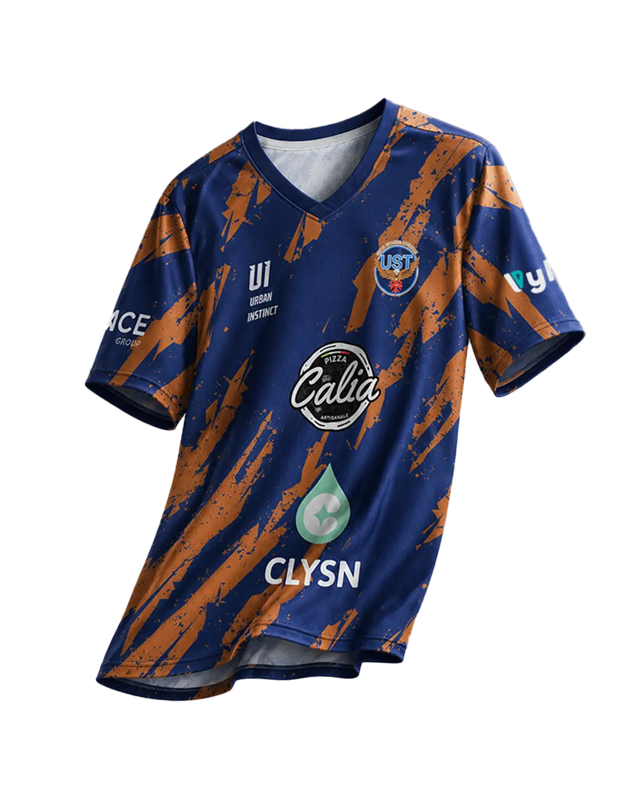
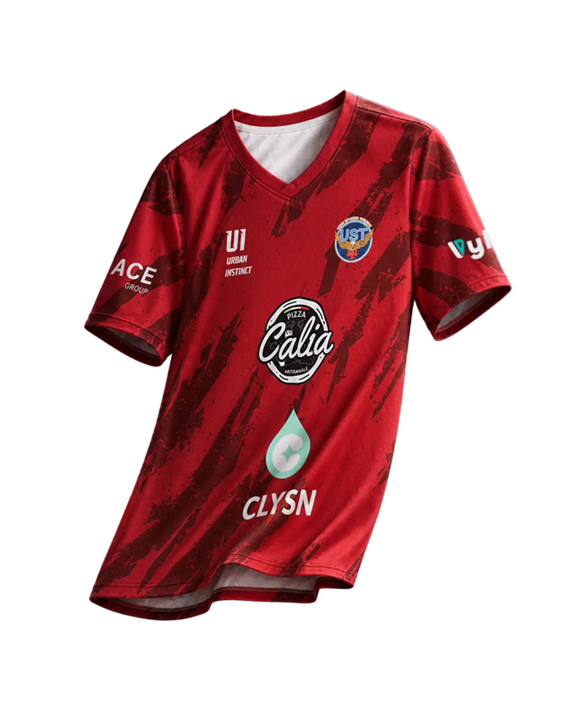
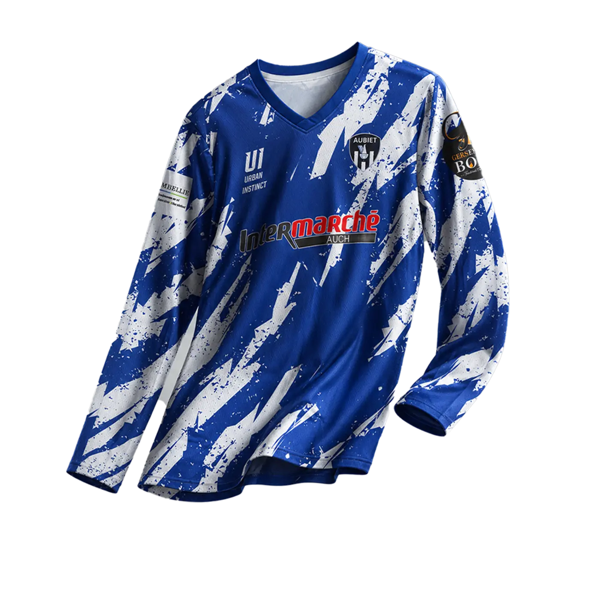
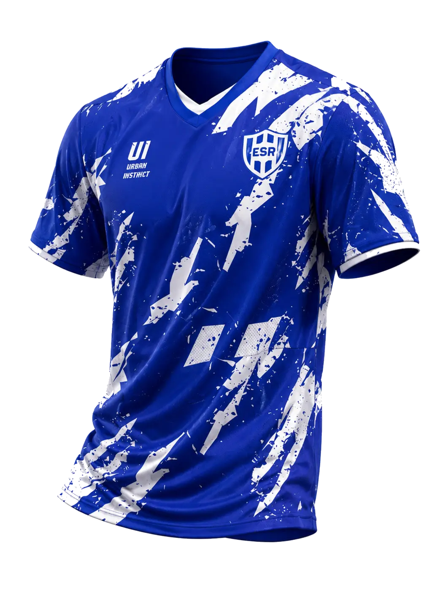
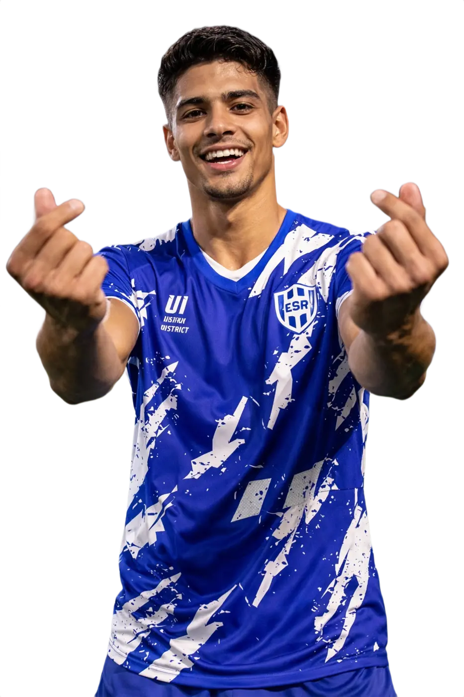

Football — Toulouse
04 — Nos clubs
Des identités faites
pour le terrain.
Football, basket ou futsal : chaque tenue est construite autour des couleurs, des partenaires et du caractère propre à chaque club.

COLLECTIONS CLUBS
Des designs différents pour représenter chaque club.
Chaque création s’adapte à l’histoire, aux couleurs et au caractère du club afin de construire une identité qui lui ressemble.

Football — Toulouse
UST — Extérieur

Football — Gers
Aubiet

Football
ESR
PORTÉS EN CONDITIONS RÉELLES
Du visuel au joueur.
Voir une tenue portée permet de juger sa présence, son équilibre et la manière dont le design prend vie sur le terrain.

FOOTBALL
ESR
Une identité bleue et blanche immédiatement visible sur le joueur.